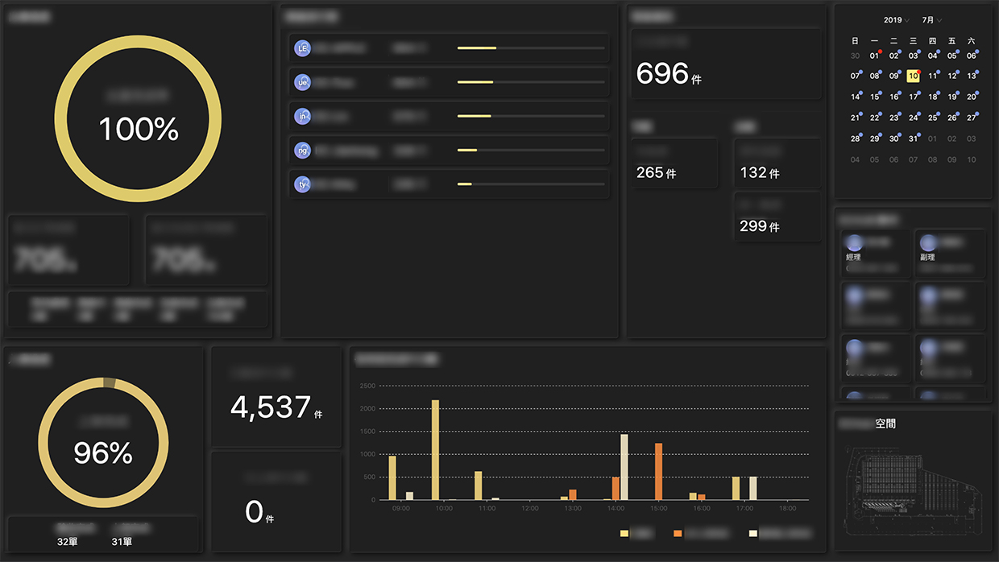
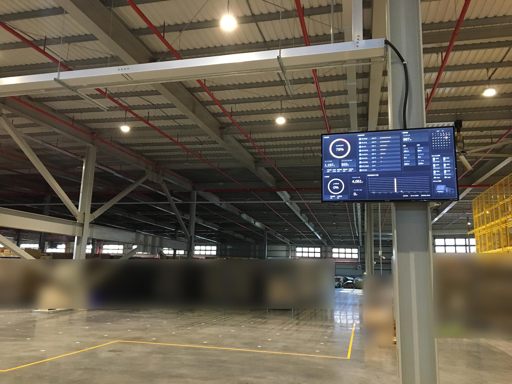

自動化倉儲現場即時資訊Dashboard
2019-2020
專案說明
自動化及資訊化倉儲打造之即時資訊Dashboard。
將進貨、包裝及出貨等相關資訊視覺化，協助現場作業主管及作業員最即時且直覺地掌握現況，做出最有效的決策。
同時也為品牌加值，展現產品創新及與傳統物流營運模式之差別。
我在此專案中負責前期需求研究、訪談/UX研究/前端切版/軟硬體整合及安裝/專案管理。

介面風格呈現
採用Neumorphism新擬物風格設計，以符合產品科技化及創新之品牌形象。此圖為UI Prototype。

頁面動態呈現
實際上線使用的畫面呈現。

現場使用情境
設置於倉儲空間入口、辦公室及作業現場，讓各處同仁及參訪人士皆能即時掌握與感受現場狀況。

現場使用情境
設置於倉儲空間入口、辦公室及作業現場，讓各處同仁及參訪人士皆能即時掌握與感受現場狀況。